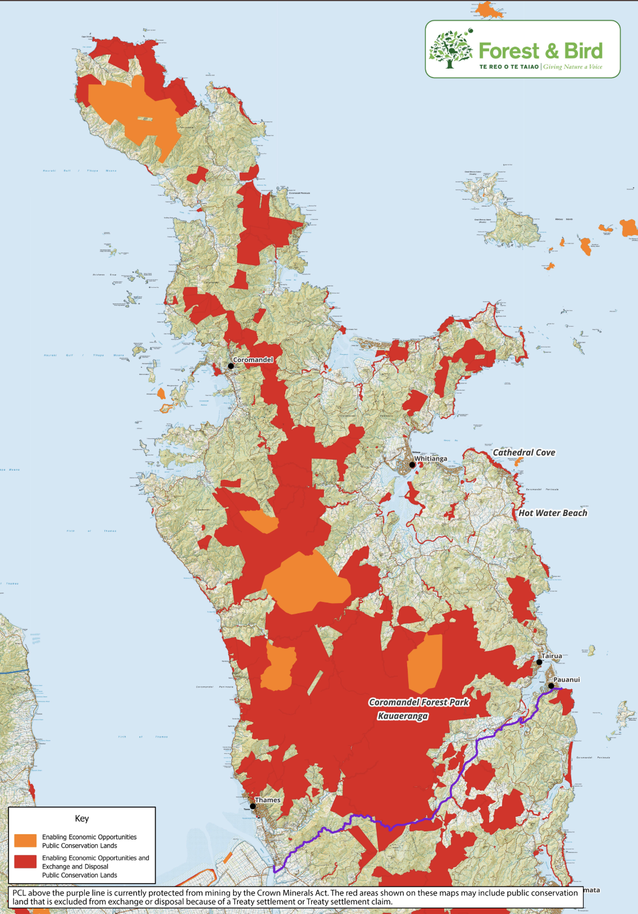
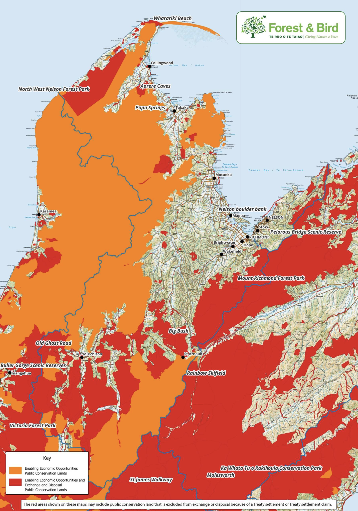
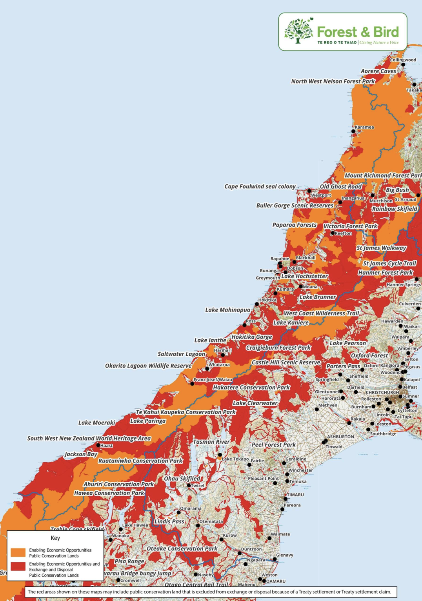

The New Zealand National party (the current governing party) is attempting to rush a bill through parliment that would allow them to disregard ALL conservation efforts. This is the biggest attack on our natural fauna in the history of our nation. Up to 60% of our protected land is at risk of private development, sold to which ever company or individual is willing to pay the most.



All of these beautiful natural landscapes are at risk of having parking lots and McDonalds built on top of them, and I'm only half joking!!
Anyone of any age, any nationality can vote against this. If you have 5 minutes, please do!!
"I oppose the Conservation Amendment Bill. The primary function of the Department of Conservation should remain the protection of our natural environment. I am deeply concerned that the proposed changes will make it easier to sell off public conservation land. Public conservation land exists for native wildlife and as a shared space for outdoor recreation. I am asking for this bill to be rejected in its entirety."
"I am a strong advocate for the protection of recreational public access to our fauna. New Zealand’s rivers, mountains, and trails belong to us, the people. They should not be placed in the care of companies and individuals seeking profit. I recommend this bill be scrapped in it's entirety unless an extreme adendum is made that benefits New Zealand as a whole."
This page will continuously be updated with relevant information when it is made avaliable. If do or do not wish to continue recieving these updates, please click the appropriate button. I will not know what you click.